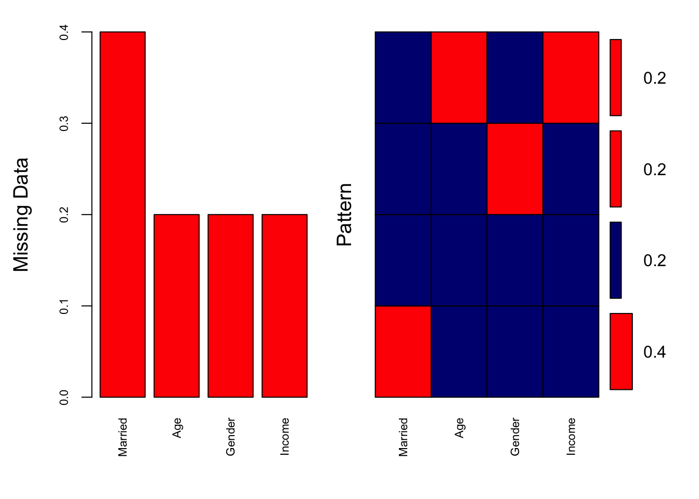
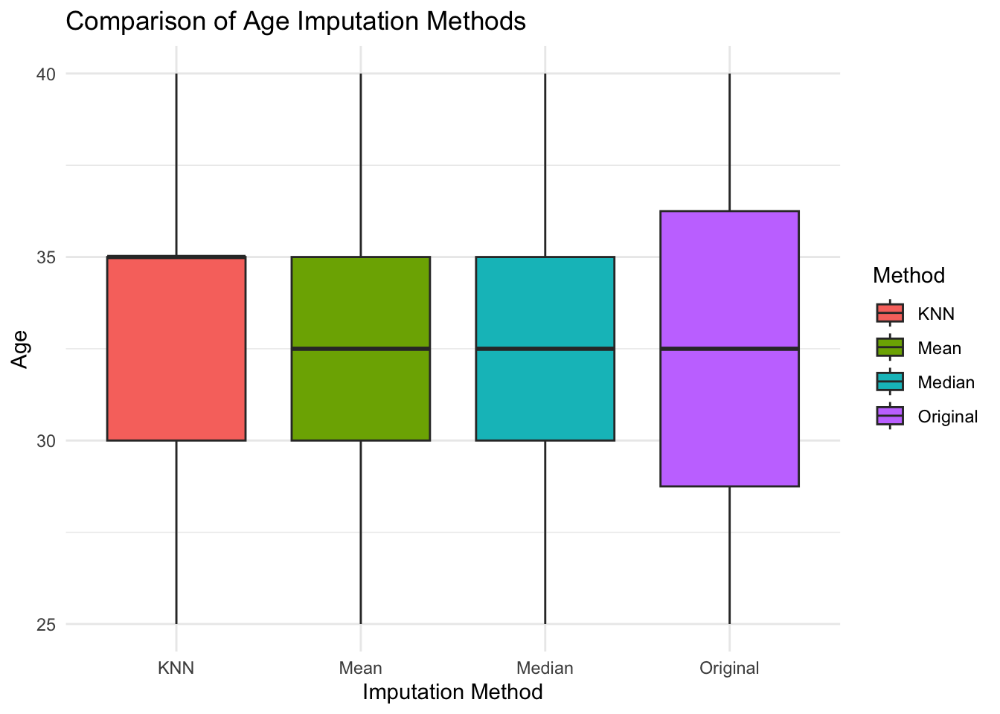
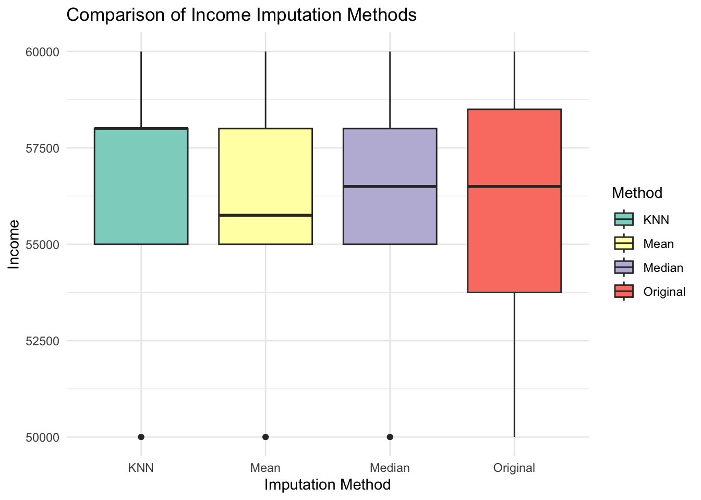

Imputation in R
Visualizing imputation (NEW!!)
# Create example dataset with missing values
data <- data.frame(
Age = c(25, 30, NA, 35, 40),
Gender = c("Male", NA, "Female", "Male", "Female"),
Income = c(50000, 60000, NA, 55000, 58000),
Married = c(NA, "Yes", "No", "Yes", NA)
)
cat("Original Data:\n")Original Data:print(data) Age Gender Income Married
1 25 Male 50000 <NA>
2 30 <NA> 60000 Yes
3 NA Female NA No
4 35 Male 55000 Yes
5 40 Female 58000 <NA># Visualising Missingness in Original Data
aggr(data, col = c("navyblue", "red"), numbers = TRUE, sortVars = TRUE,
labels = names(data), cex.axis = 0.7, gap = 3, ylab = c("Missing Data", "Pattern"))
Variables sorted by number of missings:
Variable Count
Married 0.4
Age 0.2
Gender 0.2
Income 0.2- Smaller k Imputation is influenced by fewer, closer neighbours. The imputed values may closely match the most similar existing values. Can introduce variability or bias if the nearest neighbours are not representative of the overall distribution.
- Larger k Imputation is influenced by more neighbours, smoothing the imputed values. Reduces variability but may dilute local patterns, making the imputed values less specific.
# KNN Imputation (k=3)
data_knn <- kNN(data, variable = c("Age", "Income"), k = 3)
data_knn <- data_knn[, colnames(data)] # Remove '_imp' columns added by KNN
cat("\nAfter KNN Imputation (k=3):\n")
After KNN Imputation (k=3):print(data_knn) Age Gender Income Married
1 25 Male 50000 <NA>
2 30 <NA> 60000 Yes
3 35 Female 58000 No
4 35 Male 55000 Yes
5 40 Female 58000 <NA># Combine Data for ggplot2 Visualisation
# Combine original, mean, median, and KNN imputation for Age
imputed_age <- data.frame(
Method = rep(c("Original", "Mean", "Median", "KNN"), each = nrow(data)),
Age = c(data$Age, data_mean$Age, data_median$Age, data_knn$Age)
)# Combine original, mean, median, and KNN imputation for Income
imputed_income <- data.frame(
Method = rep(c("Original", "Mean", "Median", "KNN"), each = nrow(data)),
Income = c(data$Income, data_mean$Income, data_median$Income, data_knn$Income)
)# Visualise Imputed Results for Age
ggplot(imputed_age, aes(x = Method, y = Age, fill = Method)) +
geom_boxplot() +
theme_minimal() +
labs(title = "Comparison of Age Imputation Methods", x = "Imputation Method", y = "Age") Warning: Removed 1 rows containing non-finite values (`stat_boxplot()`).
# Visualise Imputed Results for Income
ggplot(imputed_income, aes(x = Method, y = Income, fill = Method)) +
geom_boxplot() +
theme_minimal() +
labs(title = "Comparison of Income Imputation Methods", x = "Imputation Method", y = "Income") +
scale_fill_brewer(palette = "Set3")Warning: Removed 1 rows containing non-finite values (`stat_boxplot()`).
Want to understand KNN better? Check this tutorial out (PYTHON) https://www.analyticsvidhya.com/blog/2020/07/knnimputer-a-robust-way-to-impute-missing-values-using-scikit-learn/
One hot encoding
print(data) Age Gender Income Married Gender_Male Gender_Female
1 25 Male 50000 <NA> 1 0
2 30 <NA> 60000 Yes NA NA
3 NA Female NA No 0 1
4 35 Male 55000 Yes 1 0
5 40 Female 58000 <NA> 0 1But what if you have more categories?
Loading required package: latticedata <- data.frame(
ID = 1:6,
Category = c("A", "B", "C", "A", "B", "D"),
Value = c(10, 20, 30, 40, 50, 60)
)
cat("Original Dataset:\n")Original Dataset:print(data) ID Category Value
1 1 A 10
2 2 B 20
3 3 C 30
4 4 A 40
5 5 B 50
6 6 D 60There are other ways to do it! Other functions (e.g step_dummy() in tidymodels)
# Create Dummy Variables (All Categories)
# Create a dummyVars object
dummy_model <- dummyVars(~ Category, data = data)# Apply the model to the dataset
dummy_encoded <- predict(dummy_model, newdata = data)
print(dummy_encoded) CategoryA CategoryB CategoryC CategoryD
1 1 0 0 0
2 0 1 0 0
3 0 0 1 0
4 1 0 0 0
5 0 1 0 0
6 0 0 0 1# Combine Encoded Variables with Original Data
# Combine dummy variables with the original dataset
data_combined <- cbind(data, dummy_encoded)
print(data_combined) ID Category Value CategoryA CategoryB CategoryC CategoryD
1 1 A 10 1 0 0 0
2 2 B 20 0 1 0 0
3 3 C 30 0 0 1 0
4 4 A 40 1 0 0 0
5 5 B 50 0 1 0 0
6 6 D 60 0 0 0 1What is changing here?
# Create Dummy Variables with Full Rank (Exclude Reference Category)
# Create a dummyVars object with fullRank = TRUE
dummy_model_reduced <- dummyVars(~ Category, data = data, fullRank = TRUE)
# Apply the model to the dataset
dummy_encoded_reduced <- predict(dummy_model_reduced, newdata = data)
print(dummy_encoded_reduced) CategoryB CategoryC CategoryD
1 0 0 0
2 1 0 0
3 0 1 0
4 0 0 0
5 1 0 0
6 0 0 1